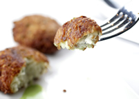

Mashed Potatoes and Cumin Flavored Patties
Ingredients
1 pound russet or red boiling potatoes, peeled and boiled1/4 cup All purpose flour
1 cup semolina
2 Green chilies such as serrano, seeded and finely chopped
1 medium Spanish onion, finely chopped
1 teaspoon toasted cumin powder
1 teaspoon Cayenne Pepper
1/2 cup Cilantro
Salt to taste
Vegetable oil for frying
Method Prepration
Sift together the flour and salt and make a smooth dough with your hands. Cover it with a plastic film and let it sit for 20 minuntes. Heat the oil to 350 F. Divide the dough into 12 balls and roll it individually into 8-inch discs. Keep them covered with a damp kitchen towel. Gently silde the rolled dough into hot oil until its puffed up and cooked.